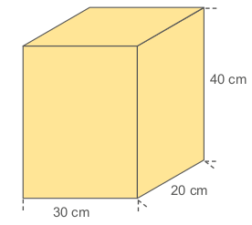
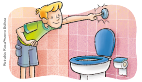
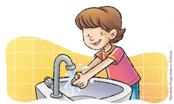
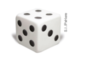
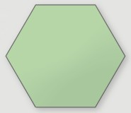
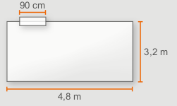
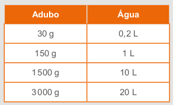

282
CAPÍTULO 7 - Medidas de capacidade
Capacidade de um recipiente
No Brasil, produz-se uma grande variedade de sucos naturais, que são vendidos em supermercados, feiras, etc. Essa variedade é consequência da diversidade de frutas cultivadas em nosso território.
O suco de acerola, por exemplo, é rico em vitamina C e apreciado em todas as regiões do país. Abaixo, temos duas jarras desse suco com 1 litro cada.
O líquido colocado em cada uma das jarras toma a forma desses recipientes. O litro (L) é uma medida de capacidade.
No Sistema Métrico Decimal, a unidade-padrão usada para medir volumes é o metro cúbico (m3) e, para medir capacidades, o litro (L). Mas que relação podemos estabelecer entre essas medidas? Vamos verificá-la fazendo o experimento a seguir:

1. Em dupla, vejam a relação de materiais necessários. Depois, mãos à obra!
Materiais:
► 1 caixa de leite de 1 litro vazia
► Régua graduada
► Tesoura sem ponta
► 1 cartolina
► Areia suficiente para encher a caixa de leite
► Cola


283
Procedimentos:
I. Façam o desenho na cartolina do molde de uma caixa, conforme o modelo, respeitando as medidas indicadas.

II. Recortem o molde e montem a caixa.
III. Em seguida, recortem a parte superior da caixa de leite, conforme mostra a imagem, e coloquem a areia nessa caixa, até enchê-la.
Agora, no caderno, respondam:
a) Quais medidas vocês utilizaram, em cm, para construir os lados dos quadrados?
b) Quanto representa essa medida, em dm?
c) Qual é o volume, em dm3, da caixa que vocês construíram?
d) Qual é a capacidade da caixa de leite que vocês trouxeram?
e) Transfira a areia da caixa de leite para a caixa construída. Comparando a capacidade da caixa de leite com o volume da caixa que você montou, qual relação podemos estabelecer entre essas unidades de medida?
Por meio desse experimento, é possível verificar que:
1 dm3 = 1 L
284
Múltiplos e submúltiplos do litro
Muitas vezes, o litro não é a unidade mais adequada para medir a capacidade de um recipiente.

Para medir a capacidade de uma mamadeira, por exemplo, usamos um submúltiplo do litro.

Os submúltiplos do litro são:
decilitro (dL)
centilitro (cL)
mililitro (mL)

Ao comprar uma caixa d’água, precisamos verificar a sua capacidade. A imagem ao lado representa uma caixa d’água de 15 000 L. É possível indicar essa capacidade usando um múltiplo do litro, como, por exemplo, o kL (quilolitro):
15 000 L = 15 kL
Os múltiplos do litro são:
quilolitro (kL)
hectolitro (hL)
decalitro (daL)
285
Observe, no quadro a seguir, a representação dos submúltiplos e múltiplos em relação ao litro.

Assim, podemos estabelecer transformações entre as unidades de medida de capacidade fazendo multiplicações ou divisões sucessivas por 10, observe:

Agora, acompanhe as situações a seguir.
Situação 1
Um copo tem capacidade de 0,35 L.
Qual é a capacidade desse copo, em mL?

Então:
0,35 L = (0,35 ∙ 1 000) mL = 350 mL
A capacidade do copo é de 350 mL.
Situação 2
Qual é a capacidade da caixa d’água apresentada, em kL?

Então:
2 500 L = (2 500 : 1 000) kL = 2,5 kL
A capacidade da caixa d’água é de 2,5 kL.

286
ENCONTRE SOLUÇÕES
1. Quando vamos ao supermercado, geralmente compramos vários produtos líquidos. Faça uma pesquisa e verifique a capacidade indicada em:
a) caixas de leite;
b) caixas de suco;
c) garrafas de água;
d) garrafas de óleo de soja.
2. A capacidade de um copo é de 300 mL. Quantos copos com essa medida serão necessários para obtermos 6 litros de água?
3. Em seu caderno, expresse estas medidas em litros:
a) 350 mL
b) 750 kL
c) 300 mL
d) 8 kL
e) 500 mL
f) 1 000 mL
g) 240 kL
h) 1 mL
4. Agora, expresse estas medidas em mililitros:
a) 5 L
b) 34 L
c) 0,2 L
d) 0,63 L
5. Um aquário tem 40 cm de comprimento, 30 cm de largura e 30 cm de altura. Quantos litros de água cabem nesse aquário?
6. Se 1 dm3 = 1 L, então, quantos litros correspondem a 1 m3?
7. Uma caixa de 3 m3 tem 230 litros de água. Quantos litros faltam para encher essa caixa?
8. Uma caixa tem o formato e as dimensões internas indicados na figura ao lado. Se despejarmos 28 litros de água nessa caixa, a água transbordará?
9. Uma caixa d’água tem como medidas internas 3 m de comprimento, 2 m de largura e 1,5 m de altura. Sabendo que a caixa está completamente cheia, quantos litros de água há nessa caixa d’água?
10. Uma caixa d’água de forma cilíndrica está completamente cheia. Mergulhando nela um paralelepípedo de chumbo maciço com 2 metros de comprimento, 1,5 metro de largura e 80 centímetros de altura, quantos litros de água transbordarão?
287
11. Veja algumas situações em que ocorre desperdício de água!
► Ao lavar as mãos ou a louça, não deixe a torneira aberta todo o tempo. Isso evitará que vários litros de água tratada sejam desperdiçados.

► A água do último enxágue das roupas, no tanque ou na máquina, pode ser usada para lavar tapetes, tênis, cobertores, pisos e calçadas.

► Diminua as descargas. Regule periodicamente a válvula hidra ou a caixa de descarga.

Os vazamentos são os grandes vilões. É fundamental observar se a válvula de descarga está funcionando perfeitamente, se não há manchas de umidade nas paredes e calçadas e também se todas as torneiras estão vedando adequadamente.

Você já observou uma fatura do serviço de distribuição de água? Quanto uma família gasta por mês para pagá-la?
Vamos analisar as informações que constam em uma fatura de água. Para isso, traga à escola uma fatura de água e, com a ajuda de um colega, verifique as informações presentes nesse documento. Depois, responda às questões a seguir em seu caderno.
a) Qual é o consumo dessa residência, em m3?
b) E em litros?
c) Qual é a média de consumo, em m3, nos últimos meses?
d) Você sabe o que significa “tarifa de esgoto”?
e) Qual é o valor dessa tarifa?
f) Qual é o valor total dessa fatura de água?
g) Para tomar um banho de 15 minutos, gastamos 105 litros de água. Para economizar água, podemos reduzir o tempo de banho para 10 minutos. Nesse caso, quantos litros de água economizaríamos?
288
h) Para escovar os dentes, é necessário apenas um copo de água. Porém, se deixamos a torneira aberta enquanto escovamos os dentes, gastamos, em média, 10 litros de água. Se um copo contém aproximadamente 200 mL de água, quantos litros de água economizamos quando fechamos a torneira? Essa quantidade representa quantos copos?
i) Uma torneira gotejando durante 1 dia desperdiça 60 litros de água. Quantos metros cúbicos de água são desperdiçados em 1 mês?
► Tome banhos rápidos.
► Deixe a torneira fechada durante a escovação dos dentes.
► Lave todas as louças antes de enxaguá-las. Lembre-se de deixar a torneira fechada na hora de passar a esponja.
► Pressione a descarga apenas o tempo necessário.
► Use um balde para lavar o carro, evitando o uso de uma mangueira.
► Lave a calçada somente quando necessário. Muitas vezes, apenas uma varrida resolve.

12. (OBMEP) Cada uma das 5 xícaras da figura está cheia só com café, só com leite ou só com suco. No total, a quantidade de café é o dobro da de suco. Nenhuma das bebidas está em mais de 2 xícaras diferentes. Quais as xícaras que contêm leite?

a) Apenas a xícara I.
b) As xícaras III e IV.
c) As xícaras II e V.
d) As xícaras III e V.
e) As xícaras IV e V.
289
PROBABILIDADE E ESTATÍSTICA
► Probabilidades
Em uma caixa serão colocadas 10 bolinhas coloridas como as mostradas a seguir.

Ele irá retirar uma bolinha de cada vez, sem olhar dentro da caixa e todas as cores têm a mesma chance de serem retiradas na primeira vez.
Observe que temos 10 bolinhas coloridas, sendo 1 delas verde. Então, temos 1 chance em 10 para tirar a cor de bolinha verde.
► Dizemos que 1/10 das bolinhas é verde, ou ainda, que 10/100 corresponde a essa cor.
10/100 = 0,10% = 10%
Neste caso, a probabilidade de ele tirar uma bolinha verde é de 10%.
Vamos reduzir a quantidade de cores e aumentar a quantidade de bolinhas de cada cor.

Note que temos 2 bolinhas amarelas, ou seja, 2/10 das bolinhas são amarelas.
2/10 = 20/200 = 0,20% = 20%
Temos 20% de probabilidade de tirar, na primeira vez, uma bolinha amarela. Agora, calcule a probabilidade das demais cores.
290
ENCONTRE SOLUÇÕES
1. É muito comum dois times disputarem cara ou coroa para verificar quem inicia um jogo. Ao jogar uma moeda, não viciada, qual a probabilidade de um jogador tirar coroa?
2. Em duplas, lancem uma moeda 3 vezes consecutivas e registrem, em seus cadernos, a sequência dos resultados. Depois, comparem os seus resultados e copiem o esquema abaixo, representando todas as possibilidades no terceiro lançamento.
3. Lucas comprou vários números de uma rifa para ajudar a turma da escola que está arrecadando dinheiro para a formatura. A rifa tem 100 números e Lucas comprou todos os números primos até 100. Qual a probabilidade de ser sorteado um número que Lucas comprou?
4. Ao jogarmos um dado, não viciado, qual a probabilidade de sair um número múltiplo de 3?

5. Observe os cartões com os números a seguir.

► Qual é a probabilidade de ao sortearmos um cartão de modo aleatório termos:
a) um número par;
b) um número divisível por 3;
c) um número múltiplo de 5.
291
RELEMBRE
1. Na malha triangular a seguir, formada por triângulos equiláteros, o lado de cada triângulo da malha mede 0,7 cm.

► No caderno, determine o perímetro de cada um dos polígonos.
2. Com o auxílio de uma régua, meça o lado dos polígonos e, em seu caderno, calcule o seu perímetro.
a)

b)

c)
d)
3. Observe a planta da sala do apartamento de Cláudia. Ela precisa trocar o rodapé de toda sala. Sabendo que o preço do metro de rodapé custa R$ 7,75, quanto ela irá gastar?
292
4. (Saresp) Observando a superfície das figuras retangulares, podemos dizer que:

a) as figuras A e B têm a mesma área.
b) a área de D é menor que a área de E.
c) a área de B é maior que a área de A.
d) a área de A é menor que a área de D.
5. (Prova Brasil) O piso de entrada de um prédio está sendo reformado. Serão feitas duas jardineiras nas laterais, conforme indicado na figura, e o piso restante será revestido em cerâmica. Qual é a área do piso que será revestido com cerâmica?
6. Copie o quadro em seu caderno e complete-o.
7. Em um triângulo retângulo, a base mede 12 cm e a altura mede a metade da medida da base. Em seu caderno, calcule a área desse triângulo.
8. Calcule a área da região colorida.
293
9. (ENEM) Para o reflorestamento de uma área, deve-se cercar totalmente, com tela, os lados de um terreno, exceto o lado margeado pelo rio, conforme a figura. Cada rolo de tela que será comprado para confecção da cerca contém 48 metros de comprimento.

► A quantidade mínima de rolos que deve ser comprada para cercar esse terreno é:
a) 6
b) 7
c) 8
d) 11
e) 12
10. Carmem comprou um terreno com 15 m de frente por 42,5 m de fundo. Sabendo que o metro quadrado desse terreno custava R$ 92,00, qual foi o preço pago pelo terreno?
11. Maurício fez um painel retangular que ocupou 13 500 cm² da parede. A base do painel mede 150 cm. Calcule as medidas da altura e do comprimento desse painel, em metros.
12. Um pedaço de cartolina quadrada com 900 cm² deverá ser recortado em retângulos de 6 cm por 10 cm. Quantos retângulos poderão ser recortados?
13. (ENEM) O jornal de certa cidade publicou em uma página inteira a seguinte divulgação de seu caderno de classificados.

► Para que a propaganda seja fidedigna à porcentagem da área que aparece na divulgação, a medida do lado do retângulo que representa os 4% deve ser de aproximadamente:
a) 1 mm
b) 10 mm
c) 17 mm
d) 160 mm
e) 167 mm
294
14. (Saresp) Um caminhão suporta cargas de até 3 000 quilos. Qual é o maior número de caixas que ele pode transportar, se cada uma delas pesa 120 quilos?
a) 25
b) 26
c) 27
d) 28
15. André foi comprar queijo na padaria. Qual é a unidade de medida mais adequada para a balconista medir a quantidade de queijo que ele deseja comprar?
a) Tonelada.
b) Quilograma.
c) Arroba.
d) Tonel.
16. (Saresp) Na Mercearia da Esquina, está afixada a tabela a seguir:
Maria comprou 5 quilos de arroz, 2 de feijão e 5 de açúcar. Quanto gastou?
a) R$ 4,00
b) R$ 10,00
c) R$ 14,00
d) R$ 20,00
16. Um recipiente de plástico, de forma cúbica, tem o volume de 1 728 cm3. Podemos dizer que, nesse recipiente, cabe(m):
a) menos que 1 litro de água;
b) entre 1 litro e 1 litro e meio de água;
c) entre 1 litro e meio e 2 litros de água;
d) mais que 2 litros de água.
17. (Saresp) Numa caixa de adubo, a tabela abaixo indica as quantidades adequadas para o seu preparo. De acordo com esta tabela, a quantidade de adubo que se deve misturar em 2 litros de água é:
a) 3 000 g
b) 300 g
c) 150 g
d) 30 g
18. (UTFPR) Paulo abriu uma garrafa de 2 litros de suco e ao servir quatro copos, com quantidades iguais, sobraram na garrafa 800 mililitros de suco. Qual a quantidade de suco que ele colocou em cada copo?
a) 0,25 litros.
b) 300 mililitros.
c) 0,125 litros.
d) 260 mililitros.
e) 0,35 litros.
295
19. (ENEM) Os hidrômetros são marcadores de consumo de água em residências e estabelecimentos comerciais. Existem vários modelos de mostradores de hidrômetros, sendo que alguns deles possuem uma combinação de um mostrador e dois relógios de ponteiro. O número formado pelos quatro primeiros algarismos do mostrador fornece o consumo em m3, e os dois últimos algarismos representam, respectivamente, as centenas e dezenas de litros de água consumidos. Um dos relógios de ponteiros indica a quantidade em litros, e o outro em décimos de litros, conforme ilustrados na figura a seguir.
Considerando as informações indicadas na figura, o consumo total de água registrado nesse hidrômetro, em litros, é igual a:
a) 3 534,85.
b) 3 544,20.
c) 3 534 850,00.
d) 3 534 859,35.
e) 3 534 850,39.
21. (UTFPR) Após saber que em sua cidade faltará água por algumas horas, uma pessoa resolveu encher três recipientes com este líquido para usá-la durante este período. No primeiro recipiente, esta pessoa colocou 30 dm3, no segundo recipiente, colocou 0,15 m3 e no terceiro colocou 50 litros de água. A quantidade total, em litros, de água que esta pessoa guardou nestes três recipientes é de:
a) 80,15
b) 95
c) 230
d) 500
e) 3200
22. (ENEM) Um porta-lápis de madeira foi construído no formato cúbico, seguindo o modelo ilustrado a seguir. O cubo de dentro é vazio. A aresta do cubo maior mede 12 cm e a do cubo menor, que é interno, mede 8 cm. O volume de madeira utilizado na confecção desse objeto foi de:

a) 12 cm3
b) 64 cm3
c) 96 cm3
d) 1 216 cm3
e) 1 728 cm3